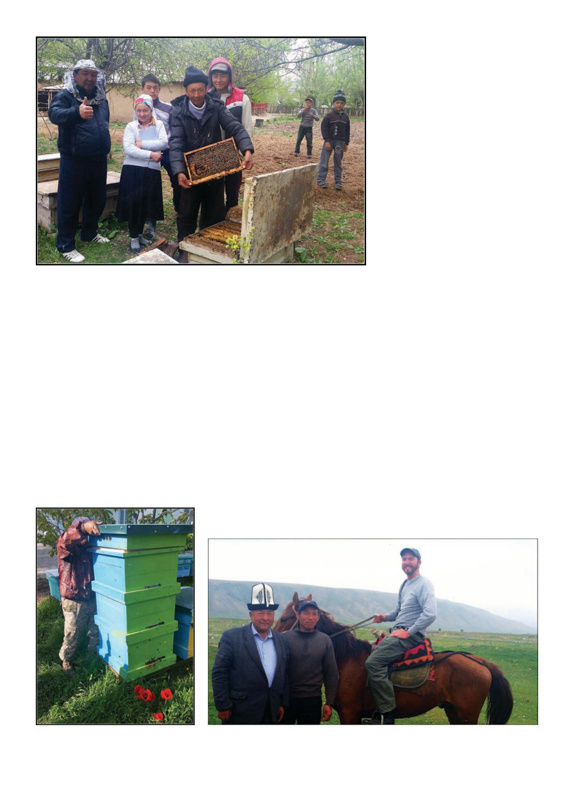

American Bee Journal
702
This project was one of many put
on by a non-governmental organi-
zation with the inspiring name of
ACDI-VOCA. The funding comes
from United States Agency for In-
ternational Development (USAID)
through their Farmer-to-Farmer pro-
gram. To quote the scope of work for
this project:
For the last decades large-scale bee
farms stopped their operations, and
many new individual farmers en-
gaged in bee-keeping face difficulties
with management and maintenance
of bee farms, breeds, reproduction,
diseases, feed and sanitary norms.
To improve and update bee-keep-
ing technologies, the host is request-
ing a volunteer expert to assess and
analyze the current situation in bee-
keeping industry in the area, assist
the host to develop strategies for
long-term sustainability and to adopt
modern technologies.
So let’s start with these dead bees
before us. Proper dosage and inte-
grated pest management: What mi-
ticide do they use? The locals shrug,
they don’t know. Well, show me the
container? Oh it’s all written in Chi-
nese. We’re off to a fantastic start here.
Soon, however, we were back in
business, of a sort, because a short
walk or horse-ride to the other side
of the village and there was an older
villager with dozens of hives full of
live bees under some leafy trees by
a gorge. These hives, like the dead
ones, consisted of huge rectangular
wooden boxes like steamer trunks.
The frames were much bigger than
our “deep” frames and the hives
contained about 20 frames each, all
in a horizontal line like a topbar hive
with frames. During winter they use
dividers to pack in three individual
hives of six (giant) frames each per
box, and, during spring and summer
they lug these massive chests up to
the flower-covered mountain slopes
and shift the frames so each hive is
in its own box without dividers. This
was the style of nearly all the hives I
would see in the country.
It can be tempting, when one learns
of a system so different, to start evan-
gelizing the beekeeping innovations
of the Reverend Lorenzo Langstroth
as they have become canon to us —
the Kyrgyz use the same knowledge
of beespace and frames, it’s just not
our orthodox interpretation of box
dimensions. But maybe this system
works better for them in these con-
ditions. They are high altitude (the
mountains are essentially the north-
ern arm of the Himalayas), and have
cold snowy winters, so maybe com-
bining three to a box like this is what
they must do. I always travel with an
open mind — after all, things I took
for granted in California didn’t work
for me in Australia. I listen intently
and observe, and then by way of shar-
ing, I describe the Langstroth hives I
use. Maybe they’ll be interested in the
ease I describe of moving boxes and
adding supers … but then again, they
don’t need to remove supers to look
at brood, so maybe they think I’m
the one who is backwards. They do
tell me they have a type of hive like
I’m describing, with boxes on top of
boxes, which they call the “corpus”
hive. When I later encountered it,
however, I found it uses supers that
are absolutely massive (see photo),
such that one person would probably
struggle to lift one alone, which kind
of achieves the worst of both worlds.
Here I am on local transportation. Note also the kalpak hat.
The living hives in Kenesh
The described “corpus” hives